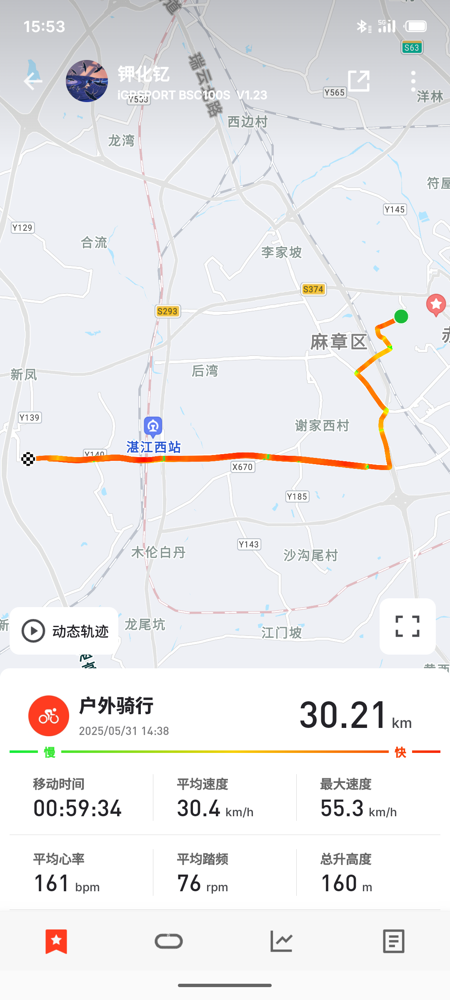
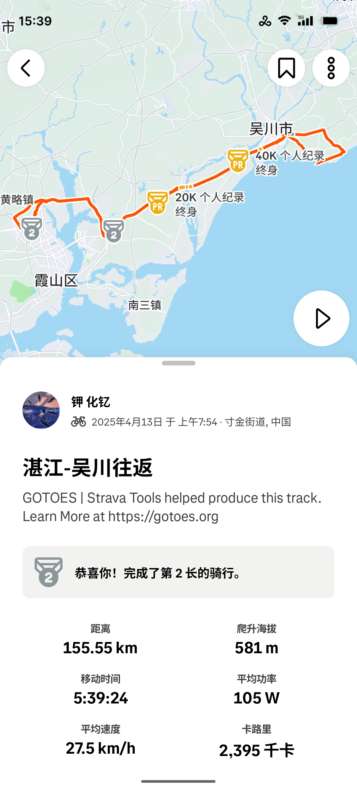
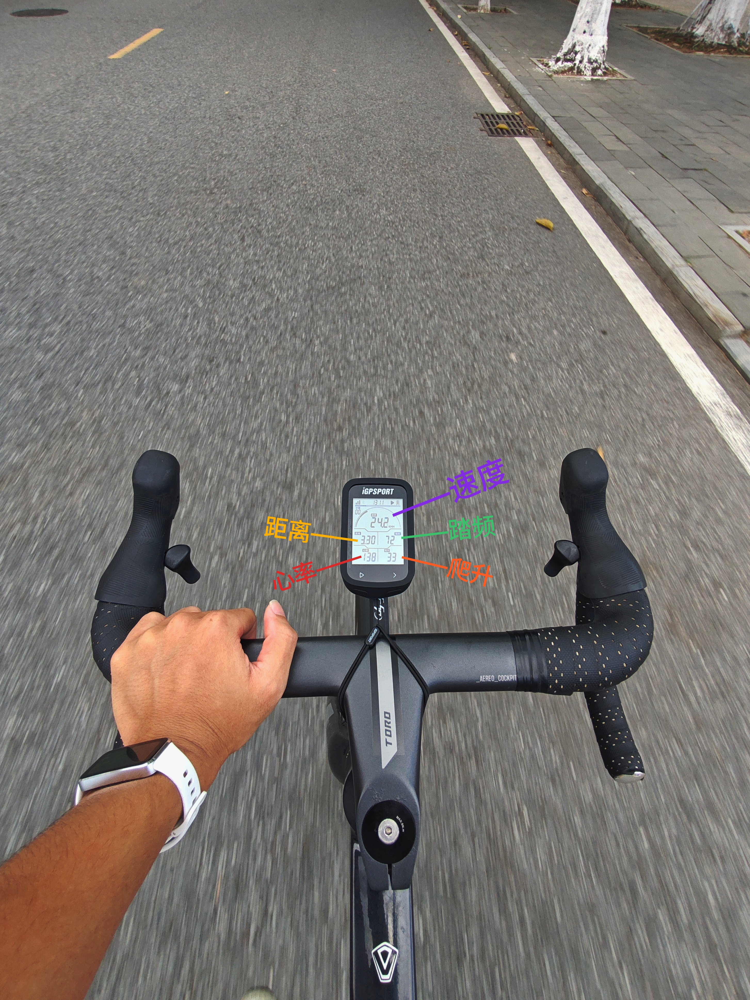
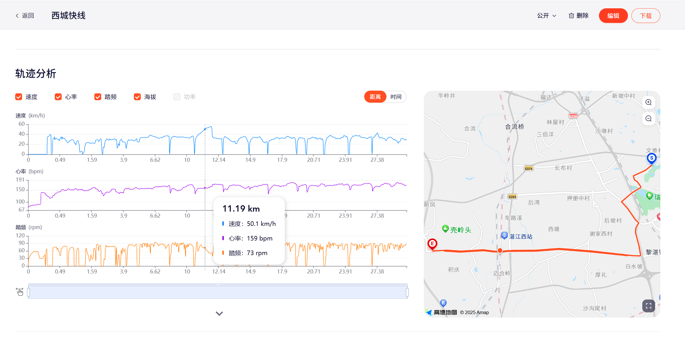
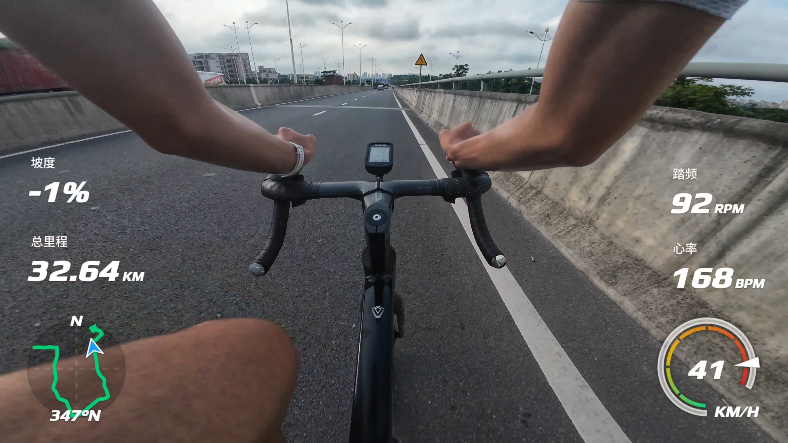
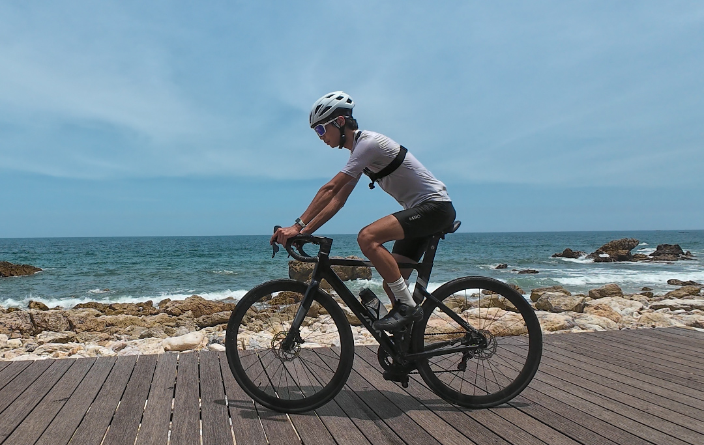

🚴 骑行 · Cycle
装备投入与数据分析
装备投入
| 项目 | 单车 | 头盔 | 尾灯 | 眼镜 | 码表 | 锁鞋 | 锁踏 | 骑服 | 把带 | 相机 | 踏频 | 心率 | 水壶 |
|---|---|---|---|---|---|---|---|---|---|---|---|---|---|
| 型号 | 佳沃御夫座 | 森瑞梦塔罗 | 洛克兄弟 | 卡普沃scvcn | 迹驰bsc100s | 和博ey113 | 卓悦zp112 | 迈森兰mbo | npy黑白 | 大疆action4 | cyclami | 华为band10 | evr渐变 |
数据获得与分析
IGPSPORT
数据获取
STRAVA
数据存储
DJI
实时影像
HUAWEI HEALTH
心率提供





